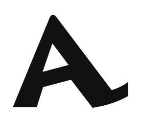
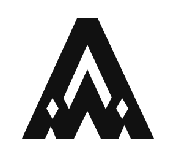

あわい / シンボルマークの確認案
マーク単体で比べる、
3つの方向。
挙げてもらった参考を手がかりに、独立したシンボル、頭文字の組み合わせ、会社の紋章の3方向を作りました。本番のロゴはまだ変更していません。
現時点ではBを推します。AとWを一つのまとまった輪郭にして、小さくしても同じ形で見せられる方向です。
A 笠のA
徳島の編み笠の輪郭を手がかりに、AWAIのAを描いた案。右に張り出す裾を特徴にしています。

B AWを重ねる
Aの輪郭にWを重ね、一つのマークにまとめた案。内側の山形と、左右の菱形が特徴です。


C AWの紋章
八角の枠とAWの文字をつないだ案。枠まで含めて、会社の印として使う形です。
